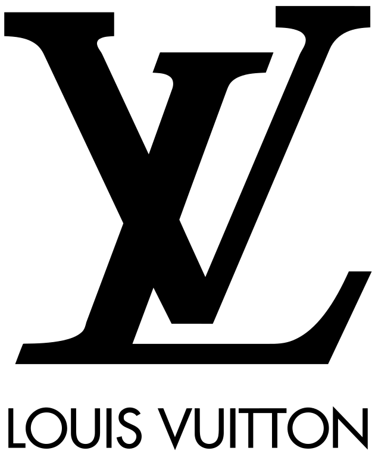
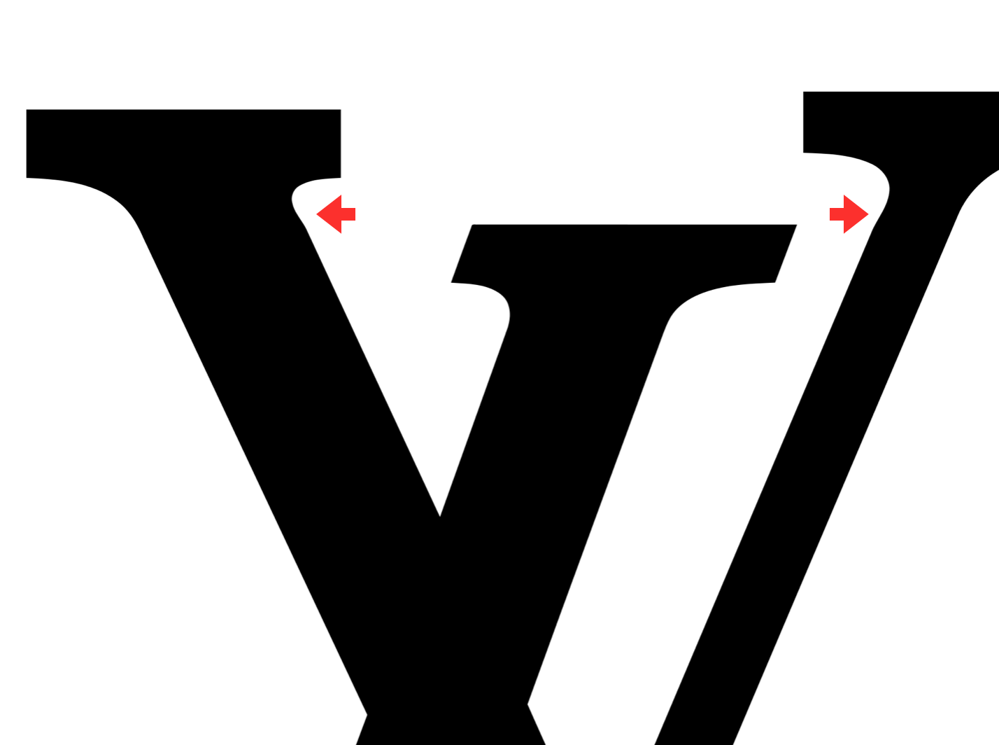
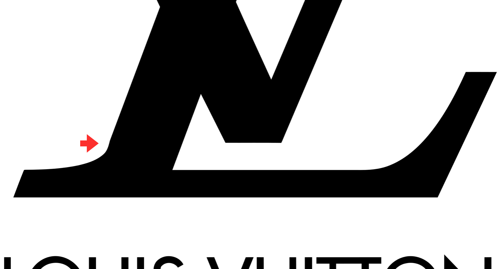

Find anything peculiar?
 Louis Vuitton, Public domain, via Wikimedia Commons{kind=link}
You probably know this logo: Louis Vuitton iconic L and V mark. Few symbols in the world can match its worldwide notoriety and allure. From Paris to Abu Dhabi, from Milan to Moscow, there is no capital in the world without a Louis Vuitton store, manifestly located in their more elegant district. It is no mistery, and no surprise, that it is one of the most counterfeit brands on the planet, and that LVMH (Moët Hennessy Louis Vuitton SE, the French multinational luxury goods conglomerate that owns Louis Vuitton) devotes a substantial part of their communication budget to fight the forgers worldwide. The story goes that the design of the monogram itself was an idea by George Vuitton – Louis’ son – to make life complicated for counterfeiters; and even the iconic flower and squared patterns that distinguish LV bags and accessories were designed with the same goal. There is no shortage of tutorials on line on how to spot a fake Louis Vuitton, and the discerning customer is alerted to check the quality of the leathers or fabrics, the stitchings and many other features in order to ascertain the authenticity of a Louis Vuitton bag. Once again, exhaustive online guides are available. So in example one can learn that if you see the logo letters anywhere truncated by edges or stitchings, that’s a fake: the LV monogram appear always intact no matter the size of the bags or how many time it is repeated in the pattern.
Interestingly enough we did not find any mention of a very peculiar feature of the Louis Vuitton logo. A trait that is quite possibly invisible to everyone but type designers.
Can you find it?
In the images below we have placed red arrows next to the brackets of the L and the V.

The bracket is the curved connection between the stems (the long, mainly vertical strokes of the letter) and the serifs, their terminals (the pedestals and caps of a letter, so to speak). Now, in letters such as the ones used in this monogram, derived by the classical roman capitals, we would expect to see perfectly curved brackets connecting smoothly the serif to the stem. That is not the case in this logo: the imperfection in the connections is clearly visible in three instances once the logo is magnified: far from being a seamless transition from a curve into a straight line, we see a bulge where we would have expected a perfectly smooth curve.
Sloppiness of the designer? That is highly unlikely considering that through the decades, and with the advent of digital typography, that could have been easily fine-tuned to the highest degree of perfection.
A more fascinating explanation is that this logo is deliberately left with a microscopic imperfection in order to detect forgeries: a counterfeiter using standard letters or templates attempting to reproduce the logo would probably end up with the “correct” bracket design.
And the surprises do not end here: there is, in support of this hypothesis, another very peculiar – once again almost invisible – feature in this monogram that would most likely not get copied correctly by a forger. But this one we would not divulge; let us know when you spot it.